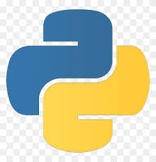

Hii, I am JAYAPRAKASH
I am a

My Skills & Experiences

JAVA
I have learned the fundamentals of Java, including basic core concepts
such as keywords and tokens, which form the building blocks of the language. I have also gained
a solid understanding of Object-Oriented Programming (OOP) principles, file handling techniques,
error handling mechanisms, and functions. These core Java concepts are essential for developing
robust and efficient applications.

PHP
I have acquired comprehensive knowledge of PHP, covering all its core
aspects. This includes understanding PHP syntax, variables, and data types, as well as mastering
advanced concepts like sessions, cookies, and file handling. Additionally, I am proficient in
database interactions using MySQL, error handling, and implementing security measures. This
extensive understanding enables me to develop dynamic and secure web applications efficiently.

C/C++
I have gained a solid understanding of C/C++, mastering fundamental
concepts such as variables, data types, and control structures. I am proficient in advanced
topics like pointers, memory management, and file handling. Additionally, I have a strong grasp
of object-oriented programming principles in C++, including classes, inheritance, and
polymorphism. This comprehensive knowledge equips me to develop efficient and high-performance
applications.

PYTHON
I have developed a thorough understanding of Python, covering essential
concepts such as variables, data types, and control structures. I am well-versed in advanced
topics like list comprehensions, file handling, and exception handling. Additionally, I have a
solid grasp of object-oriented programming, including classes and inheritance, as well as
familiarity with popular libraries and frameworks like NumPy, pandas.

HTML/CSS/JS
I have a comprehensive understanding of web development, encompassing
HTML, CSS, and JavaScript. With HTML, I am proficient in structuring web content using elements,
attributes, and semantic tags. In CSS, I excel at styling web pages, utilizing selectors,
properties, and responsive design techniques to create visually appealing layouts. My JavaScript
skills include manipulating the DOM, handling events, and implementing interactive features to
enhance user experiences. This robust foundation enables me to create dynamic and responsive web
applications.

MySQL/ORACLE
I have gained extensive knowledge in database management using MySQL and
Oracle. I am proficient in designing and managing databases, understanding and implementing
complex SQL queries, and utilizing stored procedures, triggers, and views. Additionally, I have
experience in optimizing database performance, ensuring data integrity, and managing
transactions. This expertise enables me to effectively handle and manipulate large datasets,
ensuring efficient and reliable database operations.